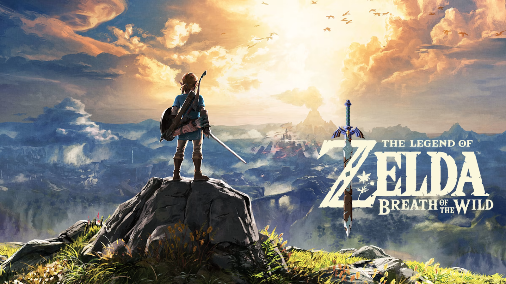
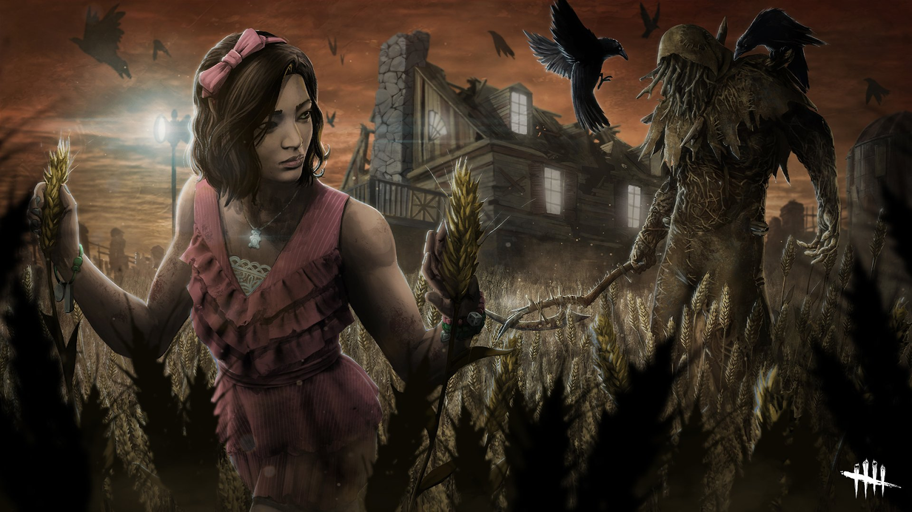

Genshin Impact
Genshin Impact es un juego de rol de acción gratuito desarrollado por miHoYo. La historia sigue al personaje principal, conocido como El Viajero,
quien ha llegado al mundo mágico de Teyvat en busca de su hermano perdido. Allí, se encuentra con una variedad de personajes coloridos y se une a
ellos en una aventura para descubrir la verdad detrás de los misterios que rodean a Teyvat.
El juego presenta un vasto mundo abierto que los jugadores pueden explorar libremente, desde las vastas extensiones del campo hasta las
alturas de las montañas. Los jugadores pueden desbloquear nuevas áreas y descubrir ciudades y mazmorras mientras se enfrentan a una gran variedad
de enemigos y desafíos.
Zelda:Breath of the wild
The Legend of Zelda: Breath of the Wild es un juego de aventuras y acción desarrollado por Nintendo para la consola Nintendo Switch. En el juego, los jugadores toman el papel del héroe de la leyenda, Link, mientras se aventuran en un vasto mundo abierto para explorar y descubrir la verdad detrás de la destrucción de Hyrule. Los jugadores tienen la libertad de explorar el vasto mundo abierto de Hyrule a su propio ritmo, con el objetivo de descubrir los secretos y misterios del reino. El juego presenta un sistema de clima dinámico, ciclo de día y noche, y un mundo vivo que reacciona de manera realista a las acciones del jugador
GTA
Grand Theft Auto (GTA) es una serie de juegos de acción y aventuras desarrollados por la compañía Rockstar Games. El objetivo principal del juego es completar una serie de misiones en una ciudad ficticia, mientras se explora un mundo abierto y se interactúa con personajes no jugables y otros jugadores. El mundo abierto en GTA está lleno de detalles y vida, con una gran cantidad de vehículos y peatones en las calles. Los jugadores pueden robar vehículos, comprar casas y negocios y personalizar su personaje y vehículos.
Resident Evil 4
Resident Evil 4 es un juego de terror y supervivencia en tercera persona desarrollado por Capcom. La historia sigue al personaje principal, Leon S. Kennedy, un agente especial que ha sido enviado a un pueblo en España para rescatar a la hija del presidente de los Estados Unidos, Ashley Graham, quien ha sido secuestrada por un culto misterioso. El juego presenta una mezcla de acción y horror, con elementos de juego de disparos y puzzles. Los jugadores deben luchar contra una variedad de enemigos, incluyendo aldeanos poseídos por una misteriosa plaga, y también enfrentar a jefes temibles.

Fifa
FIFA 22 es un juego de simulación de fútbol desarrollado y publicado por EA Sports. Como en los juegos anteriores de la serie FIFA, los jugadores pueden controlar equipos y jugadores reales, y competir en partidos de fútbol en línea o fuera de línea. El juego incluye una variedad de modos de juego, como el modo Carrera, en el que los jugadores pueden tomar el control de un equipo y gestionar su progreso a través de una temporada, y el modo Ultimate Team, en el que los jugadores pueden construir y personalizar su propio equipo utilizando jugadores de todo el mundo

Rocket League
Rocket League es un juego de deportes y carreras desarrollado y publicado por Psyonix. En el juego, los jugadores controlan un vehículo tipo coche impulsado por cohetes, y compiten en partidos de fútbol en una arena cerrada. El objetivo principal del juego es marcar más goles que el equipo contrario, y los jugadores pueden hacer esto golpeando una pelota gigante con sus vehículos y llevándola a la portería del otro equipo. Los jugadores también pueden usar una variedad de trucos y habilidades, como saltos y giros en el aire, para golpear la pelota de maneras creativas y sorprender a sus oponentes.

Stardew Valley
Stardew Valley comienza cuando vemos una imagen de nuestro abuelo en su lecho de muerte. Nuestro abuelo se acerca a nosotros y nos deja una pequeña carta, cuando la vamos a abrir nos mira y nos dice «Algún día te cansarás de la vida moderna, sentirás que ya no vale la pena seguir viviendo y te aburrirás. Es ese el momento en el que debes abrir esta carta.» Cuando termina esta cinemática vemos a nuestro personaje aburrido en su cubículo en el trabajo, es aquí donde decide abrir la carta de su abuelo y se entera que este le heredó la antigua granja del abuelo en Stardew Valley (el Valle de la estrella).

Microsoft Flight Simulator
'Flight Simulator' es un videojuego en tanto que tiene un pequeño "modo arcade" que nos permite hacer "misiones", como aterrizar en aeropuertos en las condiciones más adversas, o simplemente poner el avión en modo automático y, después de hacerlo despegar, disfrutar del paisaje y desconectar. Hay juegos contemplativos y tienen su público. Por otro lado, es un simulador hecho y derecho. ¿Qué significa eso? Que puede ser tan complicado como queramos. Seguramente un piloto tenga clarísimo (y espero que así sea) qué son los flaps, qué hace cada botón de una cabina, qué pasa si tocas tal palanca o cómo proceder ante turbulencias. Todo esto es lo que nos ofrece el videojuego/simulador que hoy nos ocupa. Podemos jugar en modo fácil, con guías visuales que nos explican qué hacer en todo momento, sistemas automatizados y un sistema de IA que gestiona las comunicaciones, o podemos apagarlo todo y buscarnos la vida para encender un jet de doble turbina.
Kof 2013
The King of Fighters XIII es un videojuego de lucha desarrollado por SNK Playmore. El juego es la decimotercera entrega de la serie King of Fighters y presenta una gran lista de personajes de juegos anteriores. La historia del juego gira en torno a un torneo conocido como King of Fighters, donde equipos de tres luchadores de diferentes países compiten entre sí. El torneo está patrocinado por una misteriosa organización conocida como "Aquellos del pasado", que tiene vínculos con el principal antagonista del juego, Ash Crimson. A medida que avanza el torneo, queda claro que Ash está usando el torneo como un medio para recolectar el poder de los artefactos antiguos conocidos como "Tesoros Sagrados", para lograr sus propios objetivos misteriosos.
Street Fighter II
"Street Fighter II" es un popular videojuego de lucha de arcade desarrollado por Capcom en 1991. La trama del juego gira en torno a un torneo de artes marciales conocido como "World Warrior", en el que luchadores de todo el mundo se reúnen para competir por el título de campeón. Los jugadores pueden elegir entre una variedad de personajes, cada uno con habilidades y movimientos únicos, y luchar contra otros personajes en un torneo de eliminación directa. El juego cuenta con ocho personajes jugables iniciales, incluyendo a Ryu, Ken, Chun-Li, Guile, Blanka, Zangief, Dhalsim y E. Honda, cada uno con su propio trasfondo y motivación para participar en el torneo.
Dark Souls III
"Dark Souls III" es un juego de rol de acción desarrollado por FromSoftware y publicado por Bandai Namco Entertainment. La trama del juego se desarrolla en un mundo oscuro y sombrío llamado Lothric, que está al borde del colapso y la destrucción. El jugador toma el papel de un no-muerto conocido como "El Sin Nombre", quien se levanta de la tumba con la tarea de restaurar el fuego en el mundo, que se está extinguiendo. El jugador debe recorrer diferentes áreas de Lothric, luchar contra una variedad de enemigos y jefes, y reunir los objetos necesarios para completar la tarea.
Final Fantasy XII
Final Fantasy XII es un videojuego de rol desarrollado y publicado por Square Enix. El juego se desarrolla en el mundo ficticio de Ivalice, donde dos poderosos imperios, Archadia y Rozarria, están en guerra. La historia sigue a un joven huérfano llamado Vaan, que sueña con convertirse en un pirata del cielo y escapar de su vida de pobreza en la ciudad de Rabanastre. Junto con sus amigos, la princesa Ashe, Basch, Balthier, Fran y Penelo, Vaan se ve envuelto en una búsqueda para evitar que Archadia obtenga el poder del legendario Esper, una criatura mágica que puede otorgar un poder inmenso a quienes la controlan.
Dead by Daylight
Dead by Daylight es un juego de terror multijugador asimétrico en el que cuatro jugadores asumen el papel de supervivientes que intentan escapar de un asesino despiadado controlado por un quinto jugador. Los supervivientes deben trabajar juntos para reparar generadores y abrir las puertas de salida mientras evitan ser cazados y atrapados por el asesino, mientras que el asesino debe capturar y sacrificar a los supervivientes para mantenerlos atrapados en el juego. El juego ofrece diferentes modos de juego, personajes jugables con habilidades y personalidades únicas, y un sistema de progresión que permite a los jugadores desbloquear nuevos elementos y habilidades.
From the Darkness
"From the Darkness" es un juego de terror psicológico con una atmósfera escalofriante, el juego tiene lugar en un antiguo apartamento soviético abandonado. La mayor parte del tiempo tienes que caminar y explorar el apartamento abandonado de tu difunto abuelo, al que viniste por un viejo álbum familiar, pero cosas extrañas comienzan a suceder en el apartamento, aquel que vive en la oscuridad no te dejará ir tan fácilmente. Tu tarea principal es salir con vida, pero esto solo se puede lograr enfrentándose cara a cara con un habitante de la oscuridad.